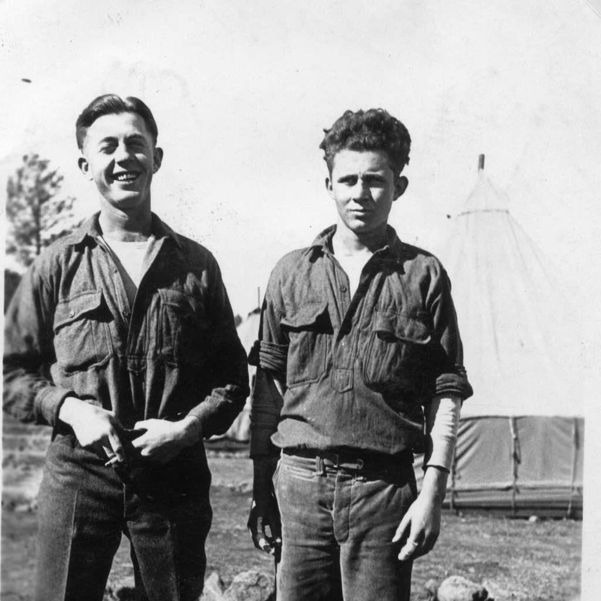

Honest tools for honest hands. We build small useful things, brick by
brick, for the people who'll actually use them. AI is the partner.
The corps shares the load and the rewards.
“
History doesn't repeat itself, but it rhymes.
attributed to Mark Twain
THEN & NOW
1933

Two CCC enrollees at camp, c. 1935. Photographer unknown. National Archives, via Wikimedia Commons.
THE CIVILIAN CONSERVATION CORPS
In 1933 Roosevelt looked at a country full of capable hands and no
honest work to put them to. He pulled three million young men out of
idleness and sent them into the woods. They planted three billion
trees. They built eight hundred state parks, hundreds of bridges,
fire roads, lookouts, fish hatcheries, telephone lines.
Workers were paid a dollar a day. They kept $5 and sent the rest
back home to support their families. Nobody got rich. The country
got built.
Nine years later the war pulled the boys out of the forest. The
infrastructure they laid is still standing. Most of it nobody
built to make a fortune. They built it because the work was there
and they were able.
2026
Not Two CCC Boys at the local coffeeshop, 2026. Image generated with ChatGPT 5.5, after the 1935 original.
THE CCC BOYS
2026 isn't the dust bowl. It's the trust bowl. It isn't the
breadlines either. It's whole categories of work going dark
overnight as the machines learn them. The cause is different.
The shape is the same: a country full of capable hands and not
enough honest work to put them to.
We use the same machines that took the work to put it back. AI
as a partner, not a replacement. One small problem solved at a
time. One brick laid, then the next. The corps helps members
ship the things their community actually needs, and they reap
their share of the reward. Nobody here is hunting a billion
dollars, much less a trillion. You should get back the value
you put into the world, not watch someone else cash it.
THE WORK IS THE WORK.
Different tools. Same handshake.
WHAT WE BUILD
SMALL, USEFUL, BUILT TO LAST.
01
Software
Tools for one job, done well. Subscriptions, one shot purchases, things that earn their keep.
02
Hardware
Objects that exist in the real world. Made carefully. Sold honestly.
03
Whatever's next
The corps doesn't know yet. That's the point. New members bring new shapes of work.
THE COLLECTIVE
HOW THIS WORKS.
You bring the idea. The collective builds it with you.
Marketing, infrastructure, support, the boring necessary parts. Those
are carried by the corp members. And every tool you build along the
way joins the workshop. The next member has a shorter road than you did.
Members draw a steady wage first. Then operating costs.
Then a year of runway in the bank. Then five. Only after the corps
itself is safe does the rest go directly to the people who made it
happen. Not shareholders.
Submissions are sacred. If you pitch us an idea and
you don't join, the idea stays buried. We are not in the business of
taking other people's work. We are in the business of helping people
ship their own.
A CAMP, NOT A COMPANY.
The old corps lived in barracks, ate from a shared kitchen, and
carried the load together. Ours is distributed across whatever
town you're in. Same idea. Different blueprint.
OUR CODE
FOUR RULES. THAT'S IT.
I.The Golden Rule.Treat people the way we'd want to be treated if we were in their position. That's the whole foundation.
II.Don't Exploit.Revenue flows toward people, not from their desperation. If the model requires someone's worst day to work, it's the wrong model.
III.Be Kind.Build things that are actually helpful. The tone matters. People remember how you treated them when they needed something.
IV.Be Thoughtful.Slow down on decisions that are hard to take back. Move fast on the reversible stuff. Prefer the honest answer.
THE NEXT CHAPTER
A WORKSHOP THAT KEEPS GROWING.
A toolbox that gets bigger every time a member ships
something. A workshop other communities can borrow from when
their own builders raise their hands. The plan is the same as
the work: small, useful, built to last, given freely.
South Carolina is the first chapter. Other states could be
next. Other countries too, where friends of the corps already
live and work. The framework is open. The brand is everyone's.
The handshake stays the handshake.
WOULD YOU LIKE TO KNOW MORE?
THE CORPS IS FORMING.
Right now this is a small workshop and a few good agents.
We're meeting builders, ideators, and quiet operators. If
this resonates with you, write us.